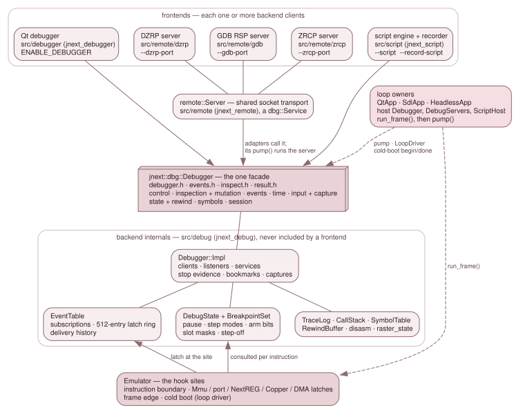

3.9 The debug subsystem¶
The debug subsystem is the developer-facing half of JNEXT. It stops the machine, shows everything inside it, changes some of it, starts it again and, with rewind on, runs it backwards. Six programs drive it:
- the Qt debugger window;
- three protocol servers, so DeZog,
z88dk-gdband ZEsarUX clients can attach over a socket; - the debugger scripting language (
.jds); - the record/replay recorder, which writes
.jdsscripts.
All six are frontends of one backend. None of them holds an Emulator.
Each holds a jnext::dbg::Debugger, the one facade declared in four published
headers. The backend lives in the same process and on the same thread as the
emulation, so reading machine state is a direct call rather than a message, and
the run loop consults the backend once per instruction, before the fetch.
This section describes the backend and the contracts every frontend relies on. 3.10 describes the frontends.

The frontends hold only the facade. The backend's internals are reached from
the Emulator's hook sites. The loop owners host the facade and are the only
callers of run_frame() and pump().
The layers¶
Frontends. A frontend is one or more backend clients. It attaches, gets a
ClientId, issues verbs with that id, and installs a Listener for the
backend's pushes. The three socket servers also register a Service, which the
loop owner's pump() drives. Protocol models stay in the frontend: DZRP's bank
bytes, ZRCP's 100 breakpoint slots and cpu-step mode, RSP's register packing and
the DSL's grammar are not in src/debug/.
The facade. jnext::dbg::Debugger (src/debug/debugger.h) and its value
types (events.h, inspect.h, result.h) are the published API. They cover
control, inspection and mutation, events and conditions, deterministic time,
input injection and capture, state and rewind, symbols, and the session.
3.9.1 describes them.
The backend internals. All of the facade's state lives in
Debugger::Impl (src/debug/debugger_impl.h), behind one unique_ptr. That
covers the client table, the services, the stop evidence, the bookmarks and the
queued captures. Next to it are the event table, DebugState, the legacy
breakpoint store, and the older primitives the facade is built on: the trace
log, the call-stack tracker, the symbol table, the rewind ring, the
disassembler and the raster derivation. No frontend includes any of these
headers.
The hook sites. The Emulator keeps the places where the backend is
consulted, and nothing else:
- the pre-instruction gate in
run_frame(); - the latch sites in
Mmu,PortDispatch,NextReg::write, the Copper, the DMA and the frame and scanline edges; - the boundary drain after each instruction.
It learns nothing about any frontend. DebugState holds a pointer to the
event table, which is how the eight Mmu sites reach it without seeing a
Debugger.
The loop owners. QtApp, SdlApp and HeadlessApp each build one
Debugger in init() and keep it for the life of the process. Each also holds
a DebugServers (the protocol servers the command line asked for) and a
ScriptHost (scripts and the recorder). The backend owns no thread and no frame
loop. The loop owner runs the frames and then calls pump(), once per tick.
3.9.3 describes that seam.
Where the code lives¶
| Path | Target | What it holds |
|---|---|---|
src/debug/debugger.h, events.h, inspect.h, result.h |
jnext_debug |
the published facade and its value types |
src/debug/debugger*.cpp, debugger_impl.h, event_table.*, inspect.cpp, result.cpp |
jnext_debug |
the facade's implementation |
src/debug/debug_state.*, breakpoints.*, trace.*, call_stack.*, symbol_table.*, rewind_buffer.*, disasm*.*, raster_state.*, resume_guard.h, debug_keymap.* |
jnext_debug |
the primitives under the facade, and the debugger keymap model |
src/debugger/ |
jnext_debugger (Qt) |
the Qt debugger window and its panels (3.10.2) |
src/qt/ |
none (header-only) | the Qt conversions of the debugger keymap, the menu-bar Alt-navigation style |
src/remote/ |
jnext_remote |
the shared socket transport (3.10.1) and the three servers in dzrp/, gdb/, zrcp/ |
src/script/ |
jnext_script |
the scripting language, its host and the recorder (3.10.6) |
src/platform/debug_servers.* |
platform | how a loop owner opens the servers and picks each tick's pump budget |
src/platform/cli_capture.h, host_key_wiring.h, host_probe.h, recording_info.h |
platform | the CLI screenshot path, the script host keys, the host-probe fixture, the recorder's header facts |
jnext_debug, jnext_remote and jnext_script have no toolkit dependency and
are built in every configuration. jnext_remote links jnext_script, because
the ZRCP server compiles its breakpoint conditions with the DSL's expression
compiler.
What the gates enforce¶
Three rules hold the layering in place, and each is checked, not just written down.
No Qt below the Qt frontend. debug_qt_free_test fails every
make unit-test if:
- a Qt include directive or a
*_qt.*file appears undersrc/debug/; - a file under
src/debugger/includes a header of the core layers (core/,cpu/,memory/,video/,audio/,peripheral/,port/); - a file under
src/debugger/namesEmulatorin code.
Rows QTF-06..08 and QTF-12/13 test the detectors themselves on planted files.
The Qt code that both Qt libraries share lives in the header-only src/qt/.
No Emulator below a frontend. Emulator is only forward-declared in the
four published headers. None of them may reach any of these:
core/emulator.h,src/platform/, Qt or SDL;memory/mmu.h,video/renderer.h,video/palette.h,video/timing.h;debug/debug_state.hordebug/breakpoints.h.
test/lint-debug-headers.sh preprocesses a one-line translation unit per
published header and matches that set against the -M dependency list, so a
forbidden header pulled in three levels down is caught like a direct include.
The lint is row 5 of the regression preflight (lint-debug-headers). In
make harness-selftest, HS-57a and HS-57b prove the row is wired and that its
verdict turns the row red. HS-57c proves the verdict does not depend on the temp
or source path.
debugger_impl.h does include core/emulator.h. That is the reason it is
internal, and the lint checks only the four published headers.
The published types do not drift. src/debug/debug_types_check.cpp is a
translation unit of static_asserts, built in all four configurations. It pins:
- the backend-owned mirrors against what they mirror:
StepModeagainst::StepMode,PaletteIdagainst::PaletteId, the screenshot layer mask againstRenderer::LAYER_*; - every
Resultenumerator's value, because adapters map aResultto a wire error by index; - each of
Listener's seven methods separately.is_abstracton the class would still pass if one method gained a default body; MachineInfo's two clock domains againstMachineTiming, and the relation of eight master cycles to one T-state.
EventKind, Layer, RegId and ClipLayer each end in a Count sentinel,
and every count is derived from it. A count derived from the last real
enumerator is blind to an append: a new kind would ship with no mask bit and no
switch arm. jnext_debug and jnext_script are also built with
-Werror=switch, so a switch without a default that misses a new enumerator
fails the build.
One caveat about "no toolkit": jnext_debug links SDL3, because
rewind_buffer.cpp includes core/emulator.h, which reaches input/keyboard.h
and from there SDL.h. The rule is no GUI toolkit, not no dependencies.
What ENABLE_DEBUGGER=OFF removes¶
ENABLE_DEBUGGER (default ON) gates only the Qt debugger UI. With it
off, jnext_debugger is neither compiled nor linked, and every use site in
src/gui/ sits inside an #ifdef. The backend, the servers, the scripting
language and Emulator::debug_state_ are present in every build. That is why
--magic-breakpoint, --trace, --dzrp-port, --gdb-port, --zrcp-port and
--script work in an SDL-only build.
What a run pays for the debugger does not depend on whether it is compiled in. It depends on whether it is armed. Nothing is armed until one of these happens:
- an arming client attaches (the open debugger window, a remote client, a loaded script, the recorder);
--persistent-breakpointsis given;- a magic breakpoint fires, which holds the machine only for its own stop.
Unarmed, the per-instruction test is a cached bool: one load and a predictable branch. 3.9.4 describes the bits behind it.
In this section¶
- 3.9.1 The backend API: the four headers, their conventions, and every capability family.
- 3.9.2 Event delivery and mutation: how an event gets from a hook site to a subscriber, and what a write from a frontend may do.
- 3.9.3 Sessions, the pump and the reconstruct contract: clients, listeners, the loop owners, and how a client survives a hard reset.
- 3.9.4 Execution control and rewind:
DebugState, the step modes, the legacy breakpoint store, rewind, and the magic breakpoint and port.
The design that produced all of this is doc/design/DEBUG-SUBSYSTEM-ARCHITECTURE.md,
with one document per frontend in doc/design/debug-subsystem/. The design
documents record why each choice was made. Where they and these pages disagree,
these pages follow the code.